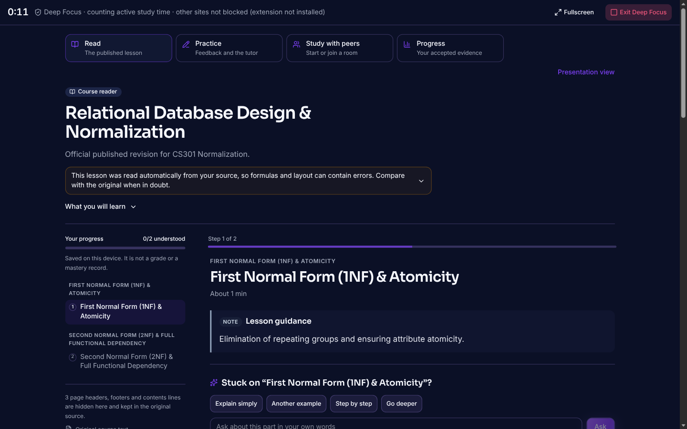
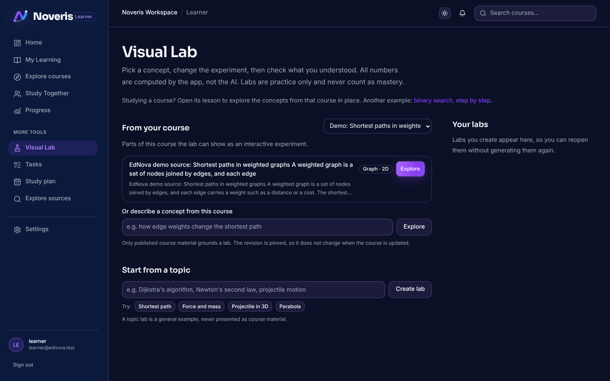
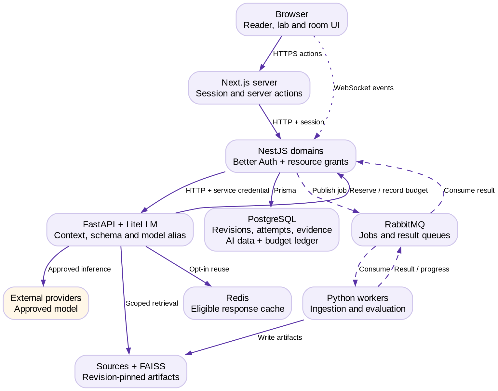

Peer learning works when people explain, question and correct each other, but real study groups are unbalanced: one voice dominates, others hesitate to ask, wrong explanations go unchallenged, and a single explanation style does not fit everyone. Noveris is a working end-to-end learning companion that turns a course document into guided individual practice and structured peer study. The AI acts as tutor (hints before answers, level- and style-adapted explanations), facilitator (peer-first prompts in a shared room) and planner (next step), while every claim it makes is grounded in the course source and every access decision is made by deterministic server code, not by a model.
| Challenge goal | Implemented in Noveris |
|---|---|
| Smart peer learning support | Study Together rooms (up to six peers, join by code, host/presenter roles, shared activity, private checks then group debrief). A peer-first facilitator proposes a question or hint that invites a peer explanation before any answer is revealed. Ordinary chat is never monitored; facilitation is invoked by an explicit ask/hint action. |
| Explain simply, guiding questions, hints before answers, confusion detection, next step | Nardouch course tutor with modes (explain, Socratic, peer) and one-tap “Explain simply / Another example / Step by step / Go deeper”. Practice support enforces a graduated hint before the full explanation. Wrong attempts and hint escalation raise tentative confusion signals. Progress and a planner suggest the next step. |
| Diagnostic + personalisation | A 6-question self-report learning-style probe (visual, analogy, step-by-step, example, repetition, problem-solving; each style offered equally) selects how explanations are phrased. It is explicitly provisional: it never grades and is visible only to the learner. |
| Multilingual (Arabic, Darija, French, English) | Nardouch language policy: Darija in Arabizi or Arabic script, French, English and code-switching, with a terminology glossary and a Tunisian-Darija evaluation set (nardouch/evaluation/cases.json). Course content may itself be French (see Fig. 1). |
| Open innovation | Visual Learning Lab (model proposes a scenario, trusted code simulates it), versioned Course Studio (upload → OCR/extraction → instructor review → publish), instructor insights dashboard, XP/badges and progress, optional voice input. |
| Entrepreneurship angle | Hybrid institutional + independent model (§12). |


Screenshots were captured from the running application on a freshly migrated and seeded database (synthetic demo data only).

Fig. 3. Runtime architecture. Solid: synchronous HTTP; dashed: broker jobs; dotted: WebSocket.
| Layer | Technology and responsibility |
|---|---|
| Web | Next.js 16 / React 19 / Tailwind; server actions; Better Auth sessions; WCAG-minded semantics (skip link, labelled controls, keyboard focus, RTL-capable text). |
| API (control plane) | NestJS domains on Node 24, Prisma 7 + PostgreSQL. Owns identity, course/room access grants, published revisions, attempts, evidence and the inference budget ledger. |
| AI service | Python FastAPI + LiteLLM. Agents: tutor, coach, planner, evaluator, facilitator, Visual Lab selector/planner, course ingestion. Schema-validated outputs. |
| Workers | RabbitMQ jobs with progress events: ingestion (text, OCR, chunking, embeddings), evaluation, planning. |
| Retrieval | all-MiniLM-L6-v2 (384-d, normalised) + FAISS IndexFlatIP, 200-word chunks with 50-word overlap, pinned to a course revision. |
| Cache / realtime | Redis for eligible response reuse and rate state; WebSocket for room state, presence and facilitator events. |
CourseRevision records the source manifest and index hashes. Activities and rooms pin a reviewed revision, so retrieval and citations stay stable when a draft changes.Instructor uploads a PDF → worker extracts/OCRs and chunks it → AI proposes objectives and activities → instructor reviews and publishes a revision → learners read, request graduated hints and ask the grounded tutor → a peer opens a room pinned to that revision → each member submits a private check → the debrief shows the shared summary while each learner keeps their own evidence.
The challenge asks for a deliberate split between compact/fast and larger/capable models. Noveris classifies every AI task by a fixed alias in apps/ai/litellm/config.yaml; the choice is configuration, not an ad-hoc per-request guess. No fine-tuning is used: all behaviour comes from prompts, supplied context, routing and architecture.
| Category | Tasks (alias) | Why this category |
|---|---|---|
| Compact gpt-oss-20b | coach nudges; course-ingestion classification/extraction; Visual Lab selector (pick one of four registered engines); short tutor clarifications (nardouch_compact) | Short, well-defined, high-frequency steps: intent/engine classification, formatting, brief rewrites. Low latency, cheap to repeat. |
| Capable gpt-oss-120b (search/reflection: llama-3.3-70b) | tutor explanations, maths/code and misconception turns (nardouch_capable); Visual Lab planner; evaluator; peer facilitator proposal; course review | Multi-source synthesis against retrieved passages, structured planning and polished pedagogy where quality matters and a few extra seconds are acceptable. |
| No model | hint ladder, source-support lookup, confusion cues, common facilitation cases, grading of quizzes, Visual Lab numerics | Deterministic code is exact, instant and free. Rules run first; a model is called only if they cannot answer. |
NARDOUCH_*_MODEL variables point to the organiser-provided service by configuration only; no code change is needed. The mapping to the organiser platform has not been tested by us.displayText, sourceIds, followups) and say explicitly when course evidence is missing.Self-reported style (probe) + observed interaction (wrong attempts, hint escalation, “explain simply” requests) → a provisional adaptation preference that changes wording (analogy, step-by-step, example, diagram) and hint depth. It is never presented as a validated learning-style classification and never affects grades.
Inference runs without accelerators, responses arrive whole, and team access is limited and shared. Noveris is built around that as a design budget.
| Situation | Behaviour the user sees |
|---|---|
| Normal latency (several seconds) | Staged status and loading states while the whole response is awaited; long jobs (ingestion, review) show progress events from the worker queue; the input is kept if a request fails. |
| Approval exhausted/expired or provider unavailable | Explicit UNAVAILABLE state with a clear message; the tutor preserves the learner's question for retry; Visual Lab offers a labelled built-in example; the facilitator returns labelled local peer-first guidance. |
| Capable model slow or down | Deterministic paths (hints, quiz grading, rules-based facilitation, lab numerics) keep working. Every response carries an execution mode (REAL_APPROVED, MOCK_TEST, DETERMINISTIC_FALLBACK, UNAVAILABLE) surfaced in the interface. |
| Background worker failure | Retryable vs terminal classification; delayed jobs never block the UI. |
| Call | Model / category | Latency | Tokens | Mode |
|---|---|---|---|---|
| Visual Lab selector | gpt-oss-20b · compact | 4.95 s (includes cold start) | 936 | REAL_APPROVED |
| Visual Lab planner | gpt-oss-120b · capable | 2.08 s | 1,747 | REAL_APPROVED |
| Planner after approval expiry | — | 0 ms, no provider call | 0 | UNAVAILABLE |
Single observations, not a benchmark; raw data in docs/submission/evidence/LIVE-INFERENCE-EVALUATION.json.
| Safeguard | Implementation |
|---|---|
| Data minimisation | Demo, seed and test data are synthetic (fictional accounts, generated course text). Only the data needed for the feature is stored; voice input is transcribed without saving raw audio; no photos, addresses or national IDs are collected. |
| What reaches the model | Only bounded course excerpts, the learner's current question and short history, via service-authenticated calls. Retrieval embeddings are computed locally. Operators must still ensure that only public, synthetic or anonymised material is uploaded: there is no automatic PII detector. |
| Access control & isolation | Resource grants are re-checked on every read, command and delayed result; private attempts are scoped to their owner; secrets live only in untracked .env files (templates: .env.example). No credentials in code, logs or screenshots. |
| Fairness & role | Adaptation is based on interaction and self-report, never on gender, region, language level or background. The AI supports learning: instructors review and publish content, and AI-extracted material is labelled as such. Labs never count as mastery; learning-style output is provisional. |
| Accessibility | Four-language support (§2), reading modes (Read/Guided/Explore/Practice), semantic landmarks and skip link, keyboard-reachable controls, light/dark themes, responsive layout and sourced-text fallback for formulas. |
| Check (run 10 Nov 2026 on the submission tree) | Result |
|---|---|
| TypeScript typecheck (API + web) | pass |
| Production build (NestJS + Next.js) | pass |
| Lint (API + web) | 0 errors (3 hook-dependency warnings) |
| API unit/service tests (Jest) | 1,351 passed, 101 suites |
| Web component tests (Vitest) | 286 passed, 42 files |
| AI service (pytest) | 1,294 passed, 54 skipped, 15 failed — the 15 need a private reference PDF that is deliberately not distributed (see benchmarks/README.md); LLM tests use test doubles |
| Fresh-database setup | migrate + demo seed + login + course reader, Visual Lab and Study Together pages verified in a browser |
| Browser e2e (Playwright, recorded 9 Nov) | 9 passed: auth, password reset, protected workspace, two-user room join |
| Integration (PostgreSQL, recorded 9 Nov) | 20 passed: private checks/debrief, learning rooms, facilitator + WebSocket; 17 membership/enrolment, 12 public-policy |
Not yet done: user testing with real learners or teachers (listed as a bonus criterion), quality evaluation of Darija output by native speakers (the evaluation set exists, scoring has not been run), and multi-instance realtime load testing.
| Institutions (B2B2C) | Independent learners (B2C) | |
|---|---|---|
| Target users | Universities, training centres and bootcamps in Tunisia and the wider MENA/francophone region; instructors and students. | Self-learners, exam-prep students, study communities. |
| Value proposition | Turn existing course material into guided practice and structured peer study in French/Arabic/Darija, with instructor control, private evidence and an insights dashboard — without replacing teachers. | A personal tutor and study-room companion that adapts to how they learn, free to start. |
| Adoption path | Free single-course pilot with one instructor and a voluntary cohort → measure activation, instructor prep time, cost per active learner → annual/cohort licence → add cohorts and departments. | Free tier with bounded AI use → upgrade to Pro for higher allowance and premium features → study-group referrals. |
| Revenue | Per-cohort or annual licence with an included AI allowance and support. | Monthly Pro subscription. |
No paying customer, partnership, price or demand validation is claimed; the model above is a plan to be validated by the pilot.
README.md), .env.example templates with no credentials, screenshots and this report. Run locally in mock mode with no keys, or add GROQ_API_KEY and an approval (docs/llm-config.md) for real inference.